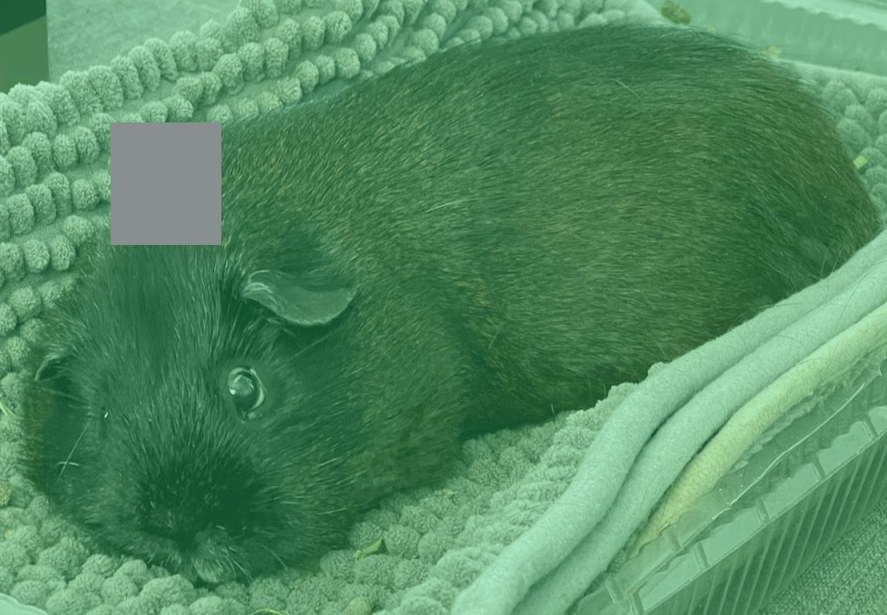
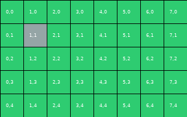
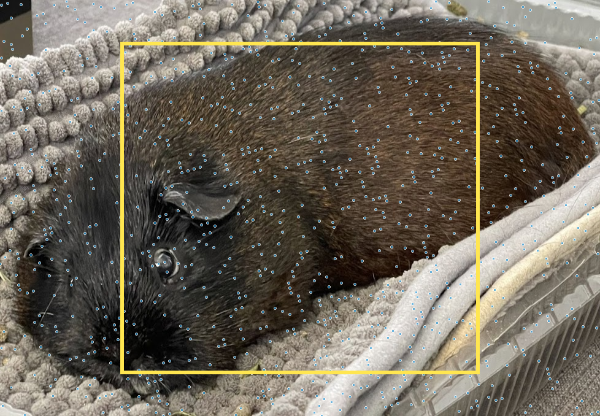
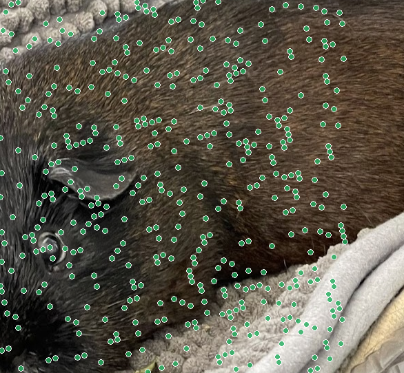

A way to hide a tamper-proof "seal" inside the pixels of an image itself — so even after the photo is copied, cropped, and stripped of all its metadata, you can still tell whether it was altered, and exactly where.
The problem
Every time an image is shared, something quietly strips away its history.
When you post a photo, send it in a chat, or a news desk re-exports it, the file gets re-saved. That re-saving throws away the hidden "label" — the metadata — that normally records where the image came from and whether it's been edited. The pixels arrive; the story behind them does not.
Systems like C2PA (the industry standard, backed by Adobe, the BBC, camera makers) attach a cryptographic certificate to the file. It's excellent — as long as the file survives intact. The moment the container is stripped, that certificate is gone and you're left holding only raw pixels with no way to check them.
PBC is explicitly designed as a complement to C2PA, not a competitor. C2PA proves identity (who made this, signed by a trusted key) at the file-container level. PBC provides tile-local integrity (has any region been altered) at the pixel level — the layer that's still there when the container is gone. The paper frames PBC for lossless / near-lossless channels: archival masters, editorial hand-offs, wire-service exchanges.
The big idea
Every pixel is a number — say, how much red, green and blue it has. PBC nudges the very last digit of each of those numbers. The last digit is so insignificant that your eye can't possibly see the change, but there's enough room across millions of pixels to tuck away a hidden message.
That hidden message is a chain of tiny tamper-evident blocks — like a row of wax seals, where each seal is stamped using the one before it. Break a seal and the chain no longer lines up.
This is classic LSB (least-significant-bit) steganography. PBC writes into the k lowest bits of each RGB channel, default k=1 → 3 hidden bits per pixel. Each block is 32 bytes and occupies ~86 pixels. A 128×128 tile holds up to 190 blocks — far more than a full editing session needs. Higher k (2 or 3) stores more history but lowers PSNR (43.8 dB, 37.3 dB).
The structure
PBC doesn't make one giant seal for the whole image. It chops the picture into a grid of tiles (128×128 pixels each), and gives every tile its own private chain of seals. No tile's chain refers to any other tile.
This one design choice is the heart of the paper, and it's what makes the next two demos work: damage stays local.
Each block stores a chain hash = SHA-256 of the previous block's bytes (truncated to 48 bits). The first block of a tile seeds from SHA256(originator ‖ tile_x ‖ tile_y ‖ session-timestamp). Because the hash is computed only over bytes within the same tile, the verification of tile A is mathematically independent of tile B — proved formally in the paper as the Cascade-Isolation Lemma.
Catching tampering
Here's a PBC-protected image, split into tiles. Pretend you're a forger: click any tile to overwrite its pixels. The verifier instantly flags exactly the tiles you touched RED and leaves everything else GREEN. No guessing, no smearing — tampering is pinned to the exact region.


The key novelty
Earlier "blockchain watermark" schemes linked every block into a single chain. That sounds neat, but it has a fatal flaw: break one block and everything after it fails too. You learn that something changed, but not where — the damage cascades.
PBC's grid-of-chains stops the cascade at the tile boundary. Try both below: break a block on the left (old way) and watch the failure run to the end; break one on the right (PBC) and watch it stay put.
Beyond detection
Because each tile holds a chain, compliant editing software can append a new entry whenever it changes a region — who edited it, what they did, when — without disturbing the parts they didn't touch. The result is a per-region Edit Ledger: a tamper-evident logbook of the image's life.
And because only the edited tiles get rewritten, appending an edit is faster than re-sealing the whole image — measured at up to 74% faster in the paper.
If only a subset S of tiles change, append-mode reads each chain in S, adds one block carrying the edit's opcode + originator + timestamp, and rewrites only those tiles. Two editors working different regions (e.g. a colourist and a retoucher) each own their tiles; overlapping tiles carry all contributing authors in order. The reference code demonstrates 3-author attribution with every tile still verifying GREEN.
Surviving redistribution
The neat tile grid has one weakness: crop the image off-grid and every tile shifts, scrambling all the seals at once — 0% survive. So PBC adds a second mode, PBC-Forest: instead of a tidy grid, it scatters hundreds of independent seeds at random positions, like planting trees across a field.
Crop the field however you like — some trees are always still standing. Drag the crop box below and watch how many seals survive.


Being honest about limits
PBC is deliberately fragile. That's a feature for catching edits, but it means it lives in lossless pipelines. The hidden bits survive lossless formats perfectly and are destroyed by lossy compression like JPEG — at which point PBC simply reports GRAY ("no seal here") rather than giving a wrong answer.
The authors state this plainly in the paper rather than overclaiming — a sign of careful work, not a weakness.
How it fits
These aren't rivals — they cover different gaps. PBC is the lightweight pixel-level safety net that needs no servers, no AI, and no special hardware.
| PBC | C2PA | Neural (AI) | |
|---|---|---|---|
| Survives metadata stripping | Yes | No* | Yes |
| Pinpoints where edited | Tile-level | No | Pixel-level |
| Proves who made it | No | Yes | Some |
| Survives JPEG | No | Via soft-binding | Yes |
| Needs GPU / training | No | No | Yes |
| Runs in camera firmware | Yes | Partly | No |
*C2PA v2.4 adds durable credentials & fingerprints to help re-find a stripped manifest — but the local tamper signal still isn't in the pixels. That's the gap PBC fills.
The evidence
Every number below was reproduced by re-running the public code on a 99-image benchmark (real photos from COCO, Oxford Flowers & Pets, plus synthetic test images).
And a property you can't fake with statistics — it's proven mathematically: a break in one tile can never affect the verdict on another. That guarantee is what lets the localization be exact instead of approximate.
Staying honest
Good research names its own boundaries. The paper lists these openly:
Each of these is a clearly-scoped direction for future work, not a hidden flaw.